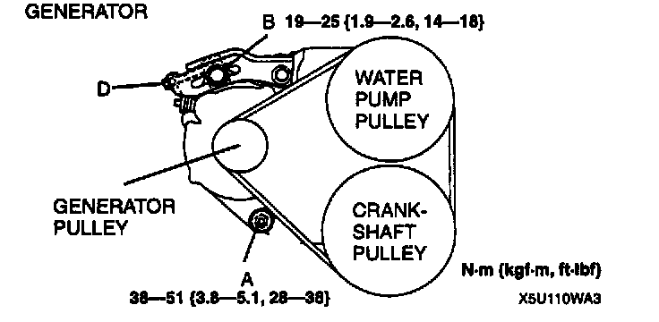
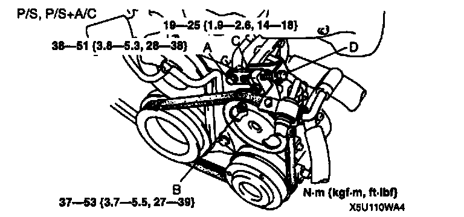
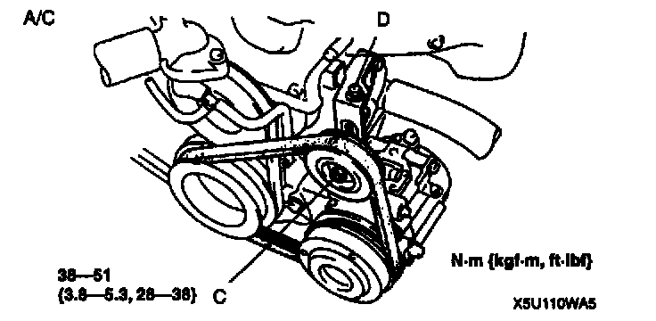

Drive Belt: Adjustments
DRIVE BELT ADJUSTMENT


1. Loosen mounting bolts A, B and nut C.
2. Adjust the belt deflection or tension by turning the adjusting bolt D.
3. Tighten mounting bolts A, B and nut C.
4. Verify the belt deflection or tension.